Как играть
Установите лаунчер, добавьте сборку и подключайтесь.
whtsky.mineserv.ru
Установите PineconeMC
Скачайте установщик для своей системы с сайта PineconeMC. На Windows обычно нужен Windows x64 · MSVC · Setup. Запустите установщик и следуйте его шагам.
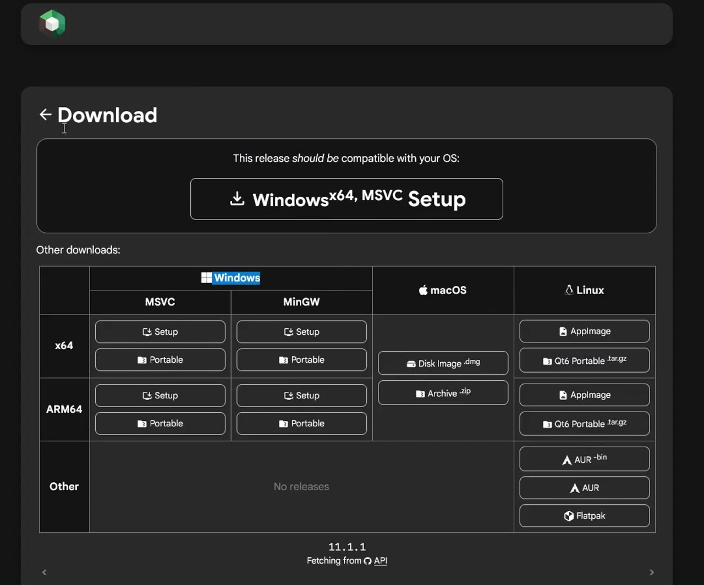
Добавьте аккаунт
В лаунчере откройте Параметры → Учётные записи → Add Ely.by. Рекомендуем зарегистрироваться на Ely.by и войти через него: так можно выбрать свой ник, загрузить скин и использовать его в игре.
Если свой скин не нужен, выберите Добавить автономную и введите ник. Это офлайн-аккаунт; можно играть со стандартным скином.
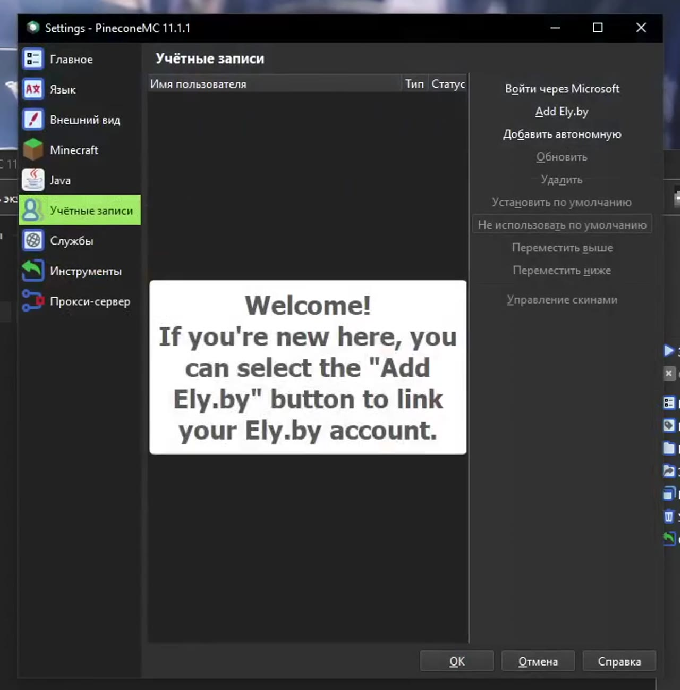
Импортируйте сборку
Клиентская сборка
ZIP · около 359 МБ · 123 мода
Скачать сборку · ZIP ↓Скачайте архив целиком. Распаковывать его перед импортом не нужно.
- Скачайте архив WHTSKY.S2.1.21.1.zip. Распаковывать его не нужно.
- Перетащите ZIP в главное окно PineconeMC. Откроется окно импорта.
- Нажмите OK и дождитесь завершения. Затем выберите сборку и нажмите Запустить.
Если перетаскивание не сработало: Добавить экземпляр → Импорт → Обзор и выберите тот же ZIP.
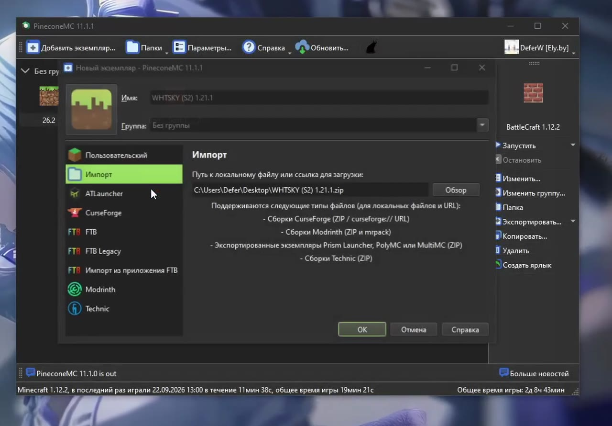
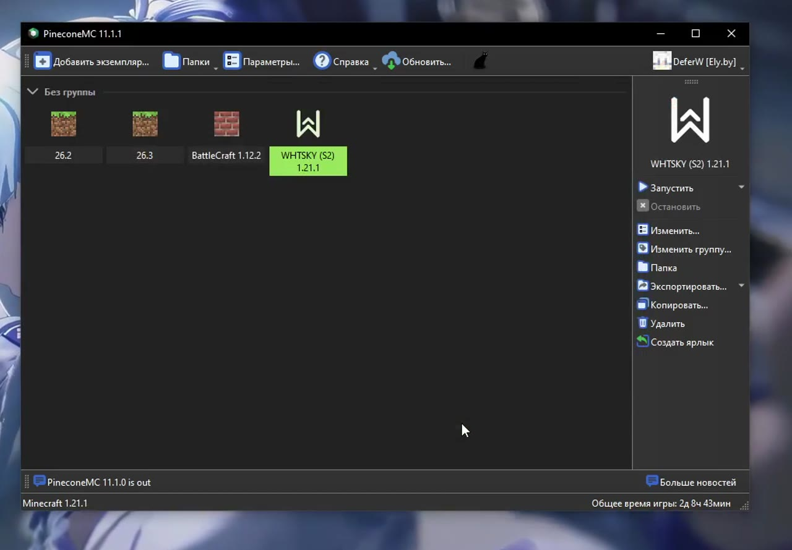
Если лаунчер не находит Java
В исходном архиве сохранён путь к Java с компьютера автора. Откройте Изменить сборку → Параметры → Java, уберите переопределение пути и включите автоматический выбор Java в настройках лаунчера. Для этой сборки нужна Java 21.
Зайдите на сервер
В главном меню сборки нажмите Подключиться. Если подключаетесь через список серверов, укажите адрес whtsky.mineserv.ru. Название сервера можно написать любое.
Если игра сообщает, что ник не в белом списке, подайте заявку в Discord. Там же можно попросить помощи с запуском.
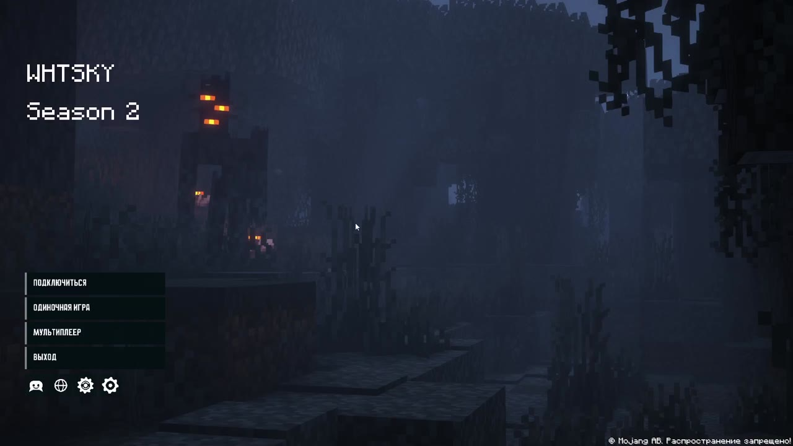
Фон, язык и расположение отдельных кнопок могут отличаться от записи. Это нормально.
Настройте под себя
Настройки уже подготовлены DeferW. Их можно оставить как есть или поменять под свой компьютер, наушники и привычки.
Графика
Откройте Настройки → Настройки графики. Подберите дальность прорисовки, масштаб интерфейса и ограничение FPS. Если игра тормозит, сначала отключите шейдеры и уменьшите дальность прорисовки.
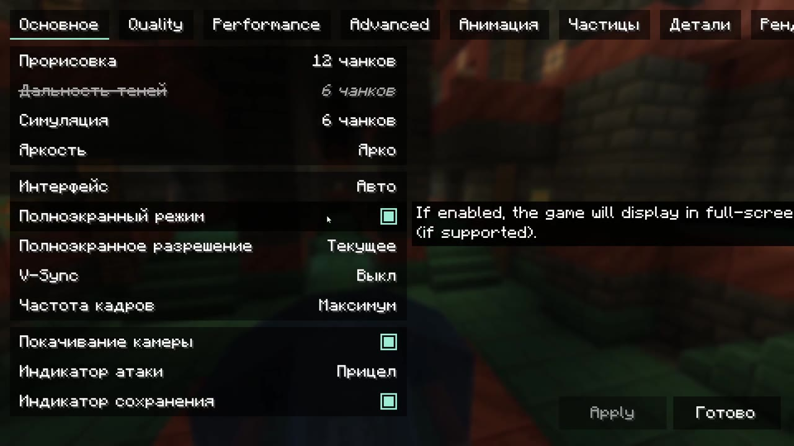
Ресурспаки — по желанию
В сборке есть Resourcify: откройте Настройки → Наборы ресурсов и нажмите «+» в правом верхнем углу. Найдите нужный ресурспак, скачайте совместимую версию и включите его в списке.
Паки на записи — пример оформления. Их не обязательно повторять.
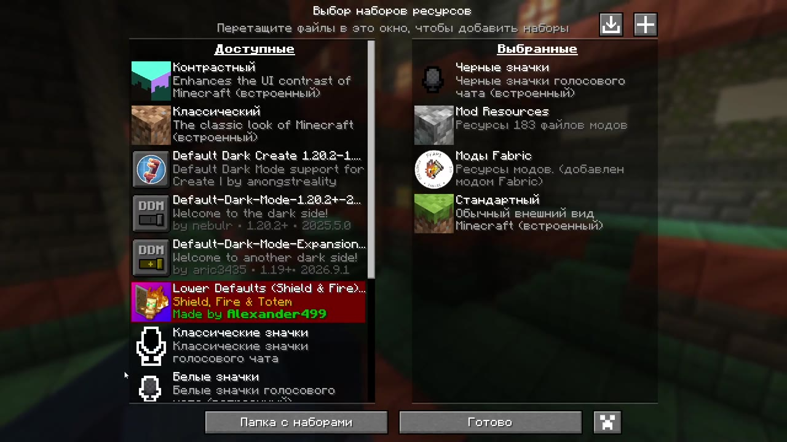
Шейдеры
- Откройте Настройки → Настройки графики.
- На вкладке «Основное» установите параметр Интерфейс: 2× или 3×. Если верхние вкладки не помещаются при 3×, выберите 2×.
- Вверху справа откройте Наборы шейдеров.
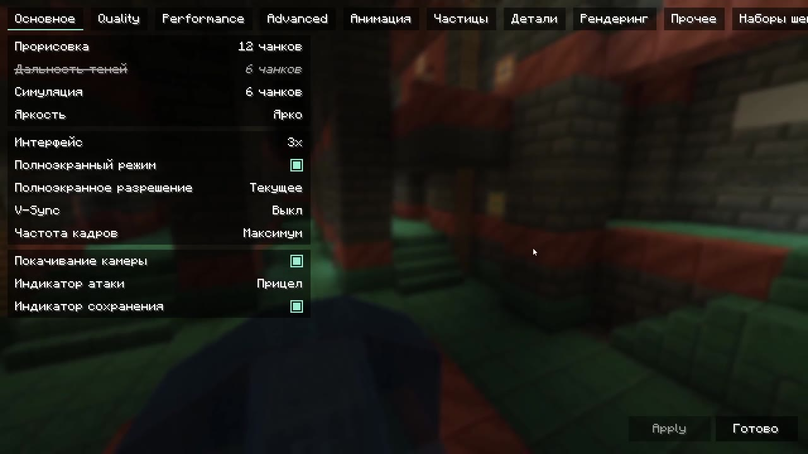
В открывшемся окне выберите подходящий вариант:
- BVS — Best Vanilla Shader включён по умолчанию и рассчитан на слабые ПК.
- Complementary Unbound — вариант для более мощных компьютеров.
- Если даже с BVS игра тормозит, нажмите «Шейдеры: Включены», чтобы переключить на «Выключены».
После выбора нажмите Применить, дождитесь загрузки и нажмите Готово. Другие шейдеры можно найти через кнопку «+» вверху этого окна.
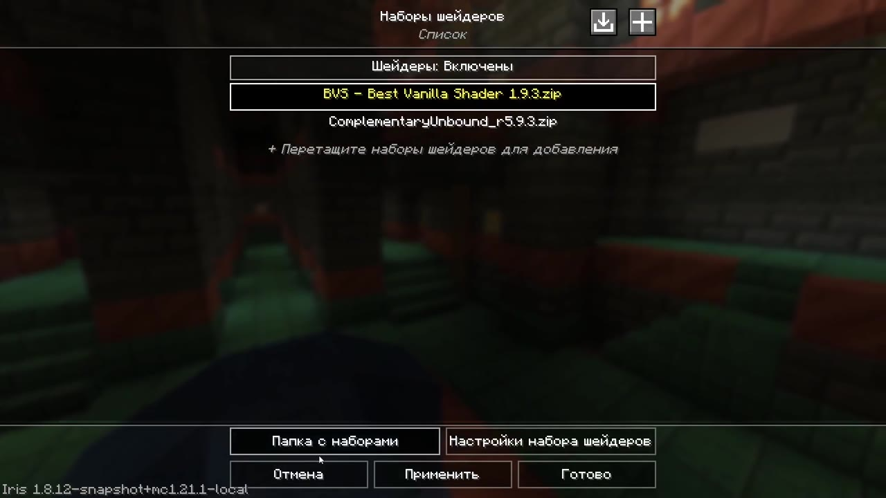
Звук
В Настройки → Музыка и звуки отрегулируйте музыку, окружение и общую громкость. При необходимости выберите устройство вывода.
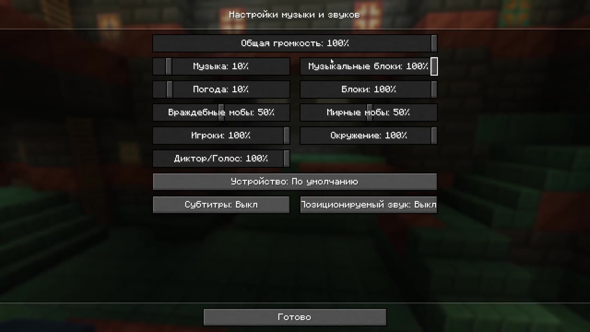
Голосовой чат
Simple Voice Chat уже установлен. После входа на сервер нажмите V и пройдите мастер настройки: выберите микрофон и наушники, проверьте звук, затем выберите активацию голосом или по кнопке.
Кнопку разговора можно поменять в управлении. Если V не открывает меню, найдите «Voice Chat» в назначении клавиш и проверьте привязку.
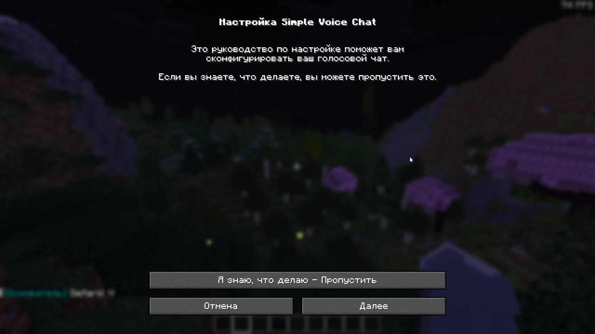
Управление
Откройте Настройки → Управление → Назначение клавиш. Здесь можно поменять любые сочетания. Пользуйтесь поиском по действию; красным отмечены конфликтующие назначения — проверьте их, если одна кнопка выполняет несколько действий.
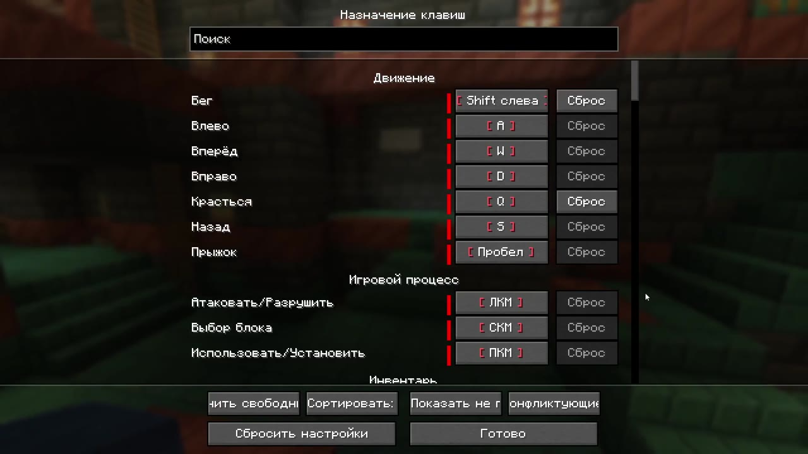
Все моды
Готовый архив содержит не только моды, но и настройки. Один этот список не заменяет сборку.
Показать все 123 мода
- AmbientSounds — 6.3.8
AmbientSounds_NEOFORGE_v6.3.8_mc1.21.1.jarИсточник ↗ - AppleSkin — 3.0.9+mc1.21
appleskin-neoforge-mc1.21-3.0.9.jarИсточник ↗ - Architectury API — 13.0.11+neoforge
architectury-13.0.11-neoforge.jarИсточник ↗ - Athena — 4.0.6
athena-neoforge-1.21.1-4.0.6.jarИсточник ↗ - Balm — 21.0.66+neoforge-1.21.1
balm-neoforge-1.21.1-21.0.66.jarИсточник ↗ - Better Advancements — 0.4.3.21
BetterAdvancements-NeoForge-1.21.1-0.4.3.21.jarИсточник ↗ - BetterF3 — 11.0.3
BetterF3-11.0.3-NeoForge-1.21.1.jarИсточник ↗ - Better Third Person — 1.9.0
BetterThirdPerson-neoforge-1.9.0.jarИсточник ↗ - Biomes O' Plenty — 21.1.0.14
BiomesOPlenty-neoforge-1.21.1-21.1.0.14.jarИсточник ↗ - BlockUI — 1.0.212
blockui-1.0.212-1.21.1-snapshot.jarИсточник ↗ - Bookshelf — 21.1.57
bookshelf-neoforge-1.21.1-21.1.57.jarИсточник ↗ - Chipped — 4.0.2
chipped-neoforge-1.21.1-4.0.2.jarИсточник ↗ - CIT Resewn (NeoForge) — 0.7.22
CITResewn-1.21.1-neoforge-0.7.22.jarИсточник ↗ - Client Sort — 3.89.1+1.21.1
clientsort-neoforge-3.89.1+1.21.1.jarИсточник ↗ - Cloth Config API — 15.0.140+neoforge
cloth-config-15.0.140-neoforge.jarИсточник ↗ - Controlling — 19.0.5
Controlling-neoforge-1.21.1-19.0.5.jarИсточник ↗ - Create: Copycats+ — 3.0.9+mc.1.21.1-neoforge
copycats-3.0.9+mc.1.21.1-neoforge.jarИсточник ↗ - Create — 6.0.10+mc1.21.1
create-1.21.1-6.0.10.jarИсточник ↗ - Create: Enchantment Industry — 2.4.2
create-enchantment-industry-2.4.2.jarИсточник ↗ - Create: Connected — 1.3.3-mc1.21.1
create_connected-1.3.3-mc1.21.1.jarИсточник ↗ - Create Crafts & Additions — neoforge-1.21.1-1.6.0
createaddition-1.6.0.jarИсточник ↗ - Create: Dragons Plus — 1.11.9
CreateDragonsPlus-1.11.9.jarИсточник ↗ - CreativeCore — 2.13.46
CreativeCore_NEOFORGE_v2.13.46_mc1.21.1.jarИсточник ↗ - Curios API — 9.5.0+1.21.1
curios-neoforge-9.5.0+1.21.1.jarИсточник ↗ - CustomSkinLoader — 15.0.1-Universal
CustomSkinLoader_Universal-15.0.1.jarИсточник ↗ - Do a Barrel Roll — 3.7.3+1.21-neoforge
do_a_barrel_roll-neoforge-3.7.3+1.21.jarИсточник ↗ - Domum Ornamentum — 1.0.236-snapshot
domum-ornamentum-1.0.236-snapshot-main.jarИсточник ↗ - Durability Tooltip — 1.2.0-neoforge-mc1.21
durabilitytooltip-1.2.0-neoforge-mc1.21.jarИсточник ↗ - Dynamic FPS — 3.9.5
dynamic-fps-3.9.5+minecraft-1.21.0-neoforge.jarИсточник ↗ - Easy NPC: Core — 7.12.1
easy_npc-neoforge-1.21.1-7.12.1.jarИсточник ↗ - Easy NPC: Config UI — 7.12.1
easy_npc_config_ui-neoforge-1.21.1-7.12.1.jarИсточник ↗ - Effect Timer Plus — 2.2.7+1.21
effecttimerplus-neoforge-2.2.7+1.21.jarИсточник ↗ - Enchantment Descriptions — 21.1.11
enchdesc-neoforge-1.21.1-21.1.11.jarИсточник ↗ - [EMF] Entity Model Features — 3.3.9-neoforge-1.21
entity_model_features-3.3.9-1.21-neoforge.jarИсточник ↗ - [ETF] Entity Texture Features — 7.2.4-neoforge-1.21
entity_texture_features-7.2.4-1.21-neoforge.jarИсточник ↗ - Entity Culling — 1.9.0
entityculling-neoforge-1.9.0-mc1.21.1.jarИсточник ↗ - FallingTree — 1.21.1-1.21.1.11
FallingTree-1.21.1-1.21.1.11.jarИсточник ↗ - FancyMenu — 3.9.12-1.21.1-neoforge
fancymenu_neoforge_3.9.12_MC_1.21.1.jarИсточник ↗ - Farmer's Delight — 1.21.1-1.3.4
FarmersDelight-1.21.1-1.3.4.jarИсточник ↗ - FastSuite — 1.21.1-6.0.7
FastSuite-1.21.1-6.0.7.jarИсточник ↗ - FerriteCore — 7.0.3-neoforge
ferritecore-7.0.3-neoforge.jarИсточник ↗ - Forgified Fabric API — 0.116.15+2.3.5+1.21.1
forgified-fabric-api-0.116.15+2.3.5+1.21.1.jarИсточник ↗ - FramedBlocks — 10.6.1
FramedBlocks-10.6.1.jarИсточник ↗ - FTB Filter System — 21.1.4
ftb-filter-system-neoforge-21.1.4.jarИсточник ↗ - FTB Library — 2101.1.35
ftb-library-neoforge-2101.1.35.jarИсточник ↗ - FTB Quests — 2101.1.34
ftb-quests-neoforge-2101.1.34.jarИсточник ↗ - FTB Teams — 2101.1.11
ftb-teams-neoforge-2101.1.11.jarИсточник ↗ - FTB XMod Compat — 21.1.11
ftb-xmod-compat-neoforge-21.1.11.jarИсточник ↗ - Fusion (Connected Textures) — 1.3.15b-neoforge-mc1.21.1
fusion-1.3.15b-neoforge-mc1.21.1.jarИсточник ↗ - GlitchCore — 2.1.0.2
GlitchCore-neoforge-1.21.1-2.1.0.2.jarИсточник ↗ - GraveStone Mod — neoforge-1.21.1-1.0.40
gravestone-neoforge-1.21.1-1.0.40.jarИсточник ↗ - Handcrafted — 4.0.3
handcrafted-neoforge-1.21.1-4.0.3.jarИсточник ↗ - ImmediatelyFast — 1.6.14+1.21.1-neoforge
ImmediatelyFast-NeoForge-1.6.14+1.21.1.jarИсточник ↗ - Immersive Aircraft — 1.5.2+1.21.1
immersive_aircraft-1.5.2+1.21.1-neoforge.jarИсточник ↗ - Iris Shaders — 1.8.12+1.21.1-neoforge
iris-neoforge-1.8.12+mc1.21.1.jarИсточник ↗ - Jade 🔍 — 15.10.0+neoforge
Jade-1.21.1-NeoForge-15.10.0.jarИсточник ↗ - Jade Addons (Neo/Forge) — 6.1.1+neoforge
JadeAddons-1.21.1-NeoForge-6.1.1.jarИсточник ↗ - Just Enough Items (JEI) — 19.50.0.414
jei-1.21.1-neoforge-19.50.0.414.jarИсточник ↗ - Just Enough Professions (JEP) — 4.0.4
JustEnoughProfessions-neoforge-1.21.1-4.0.4.jarИсточник ↗ - Just Enough Resources (JER) — 1.6.0.17
JustEnoughResources-NeoForge-1.21.1-1.6.0.17.jarИсточник ↗ - Just Zoom — 2.1.0-1.21.1-neoforge
justzoom_neoforge_2.1.0_MC_1.21.1.jarИсточник ↗ - Kaleidoscope Tavern — 1.2.0-neoforge+mc1.21.1
kaleidoscopetavern-1.2.0-neoforge+mc1.21.1.jarИсточник ↗ - Konkrete — 1.9.9-1.21-neoforge
konkrete_neoforge_1.9.9_MC_1.21.jarИсточник ↗ - Kotlin for Forge — 5.12.0
kotlinforforge-5.12.0-all.jarИсточник ↗ - KubeJS — 2101.7.2-build.377
kubejs-neoforge-2101.7.2-build.377.jarИсточник ↗ - LambDynamicLights - Dynamic Lights — 4.8.8+1.21.1
lambdynamiclights-4.8.8+1.21.1.jarИсточник ↗ - [Let's Do] Farm & Charm — 1.1.26
letsdo-farm_and_charm-neoforge-1.1.26.jarИсточник ↗ - Lighty — 3.0.0-beta.8+1.21.1
lighty-neoforge-3.0.0-beta.8+1.21.1.jarИсточник ↗ - Macaw's Bridges — 3.1.2
mcw-bridges-3.1.2-mc1.21.1neoforge.jarИсточник ↗ - Macaw's Doors — 1.1.5
mcw-doors-1.1.5-mc1.21.1neoforge.jarИсточник ↗ - Macaw's Windows — 2.4.2
mcw-mcwwindows-2.4.2-mc1.21.1neoforge.jarИсточник ↗ - Macaw's Roofs — 2.3.2
mcw-roofs-2.3.2-mc1.21.1neoforge.jarИсточник ↗ - Macaw's Trapdoors — 1.1.5
mcw-trapdoors-1.1.5-mc1.21.1neoforge.jarИсточник ↗ - Mekanism — 10.7.19.85
Mekanism-1.21.1-10.7.19.85.jarИсточник ↗ - Mekanism Generators — 10.7.19.85
MekanismGenerators-1.21.1-10.7.19.85.jarИсточник ↗ - Mekanism Tools — 10.7.19.85
MekanismTools-1.21.1-10.7.19.85.jarИсточник ↗ - Melody — 1.0.10-1.21-neoforge
melody_neoforge_1.0.10_MC_1.21.jarИсточник ↗ - MineColonies — 1.1.1399
minecolonies-1.1.1399-1.21.1-snapshot.jarИсточник ↗ - MineColonies Questline — 1.1.0
minecolonies-questline-1.21.1-1.1.0.jarИсточник ↗ - ModernFix — 5.27.24+mc1.21.1
modernfix-neoforge-5.27.24+mc1.21.1.jarИсточник ↗ - More Quest Types — 1.3.9
more_quest_types-neoforge-1.3.9.jarИсточник ↗ - Mouse Tweaks — 1.21-2.26.1-neoforge
MouseTweaks-neoforge-mc1.21-2.26.1.jarИсточник ↗ - Multi-Piston — 1.2.58
multipiston-1.2.58-1.21.1.jarИсточник ↗ - Not Enough Animations — 1.12.6
notenoughanimations-neoforge-1.12.6-mc1.21.1.jarИсточник ↗ - Open Quests Community Pack — 0.1.6+1.21.1-neoforge
openquests-0.1.6+1.21.1-neoforge.jarИсточник ↗ - Open Quests API — 0.2.0+1.21.1-neoforge
openquests_api-0.2.0+1.21.1-neoforge.jarИсточник ↗ - Overflowing Bars — v21.1.0-1.21.1-NeoForge
OverflowingBars-v21.1.0-1.21.1-NeoForge.jarИсточник ↗ - Particular ✨ Reforged — 1.5.5
particular-1.21.1-NeoForge-1.5.5.jarИсточник ↗ - Per Player Quests — 1.0.3
perplayerquests-neoforge-1.0.3.jarИсточник ↗ - Ping in Tablist — 1.1.0
Ping in Tablist-neoforge-1.21.1-1.1.0.jarИсточник ↗ - Placebo — 1.21.1-9.9.2
Placebo-1.21.1-9.9.2.jarИсточник ↗ - Polymorph — 1.0.8+1.21.1
polymorph-neoforge-1.0.8+1.21.1.jarИсточник ↗ - Prickle — 21.1.7
prickle-neoforge-1.21.1-21.1.7.jarИсточник ↗ - Puzzles Lib — 21.1.60
PuzzlesLib-v21.1.60-mc1.21.1-NeoForge.jarИсточник ↗ - Quest Giver — 1.5.3
quest_giver-1.21.1-1.5.3.jarИсточник ↗ - Steam 'n' Rails Neoforge — 0.2.1+neoforge-mc1.21.1
railways-0.2.1+neoforge-mc1.21.1.jarИсточник ↗ - Resourceful Lib — 3.0.12
resourcefullib-neoforge-1.21-3.0.12.jarИсточник ↗ - Resourcify — 1.8.7
Resourcify (1.21.1-neoforge)-1.8.7.jarИсточник ↗ - Rhino — 2101.2.8-build.91+Rhino-1.21
rhino-2101.2.8-build.91.jarИсточник ↗ - Searchables — 1.0.2
Searchables-neoforge-1.21.1-1.0.2.jarИсточник ↗ - Shulker Box Tooltip — 5.1.9+1.21.1-neoforge
shulkerboxtooltip-neoforge-5.1.9+1.21.1.jarИсточник ↗ - 3D Skin Layers — 1.11.2
skinlayers3d-neoforge-1.11.2-mc1.21.1.jarИсточник ↗ - Create Slice & Dice — 4.3.4
sliceanddice-4.3.4-neoforge.jarИсточник ↗ - Sodium Extra — mc1.21.1-0.6.0+neoforge
sodium-extra-neoforge-0.6.0+mc1.21.1.jarИсточник ↗ - Sodium — mc1.21.1-0.6.13-neoforge
sodium-neoforge-0.6.13+mc1.21.1.jarИсточник ↗ - Sophisticated Backpacks — 1.21.1-3.26.5.2171
sophisticatedbackpacks-1.21.1-3.26.5.2171.jarИсточник ↗ - Sophisticated Core — 1.21.1-1.5.2.2343
sophisticatedcore-1.21.1-1.5.2.2343.jarИсточник ↗ - Sound Physics Remastered — neoforge-1.21.1-1.5.1
sound-physics-remastered-neoforge-1.21.1-1.5.1.jarИсточник ↗ - Storage Drawers — 1.21.1-13.11.4
StorageDrawers-neoforge-1.21.1-13.11.4.jarИсточник ↗ - Structurify - Structure Control — neoforge-2.0.41+mc1.21.1
structurify-neoforge-2.0.41+mc1.21.1.jarИсточник ↗ - Structurize — 1.0.833-snapshot
structurize-1.0.833-1.21.1-snapshot.jarИсточник ↗ - SuperMartijn642's Config Lib — 1.1.8-neoforge-mc1.21
supermartijn642configlib-1.1.8-neoforge-mc1.21.jarИсточник ↗ - TerraBlender — 4.1.0.8
TerraBlender-neoforge-1.21.1-4.1.0.8.jarИсточник ↗ - Terrano — 1.5.1
terrano-neoforge-1.5.1.jarИсточник ↗ - Trade Cycling — neoforge-1.21.1-1.0.18
trade-cycling-neoforge-1.21.1-1.0.18.jarИсточник ↗ - Create: Trading floor — 3.0.16
trading_floor-3.0.16.jarИсточник ↗ - Simple Voice Chat — neoforge-1.21.1-2.6.22
voicechat-neoforge-1.21.1-2.6.22.jarИсточник ↗ - Waystones — 21.1.46+neoforge-1.21.1
waystones-neoforge-1.21.1-21.1.46.jarИсточник ↗ - Xaero's Minimap — neoforge-1.21.1-26.5.0
xaerominimap-neoforge-1.21.1-26.5.0.jarИсточник ↗ - Xaero Train Map — 1.0.0
xaerotrainmap-1.0.0.jarИсточник ↗ - Xaero's World Map — neoforge-1.21.1-1.46.0
xaeroworldmap-neoforge-1.21.1-1.46.0.jarИсточник ↗ - YetAnotherConfigLib (YACL) — 3.8.2+1.21.1-neoforge
yet_another_config_lib_v3-3.8.2+1.21.1-neoforge.jarИсточник ↗ - YUNG's API — 1.21.1-NeoForge-5.1.9
YungsApi-1.21.1-NeoForge-5.1.9.jarИсточник ↗
Полная видеоинструкция
Можно повторять шаги по записи и ставить её на паузу. Адрес и email автора скрыты.
Скачать видео · 39 МБ · 4:43